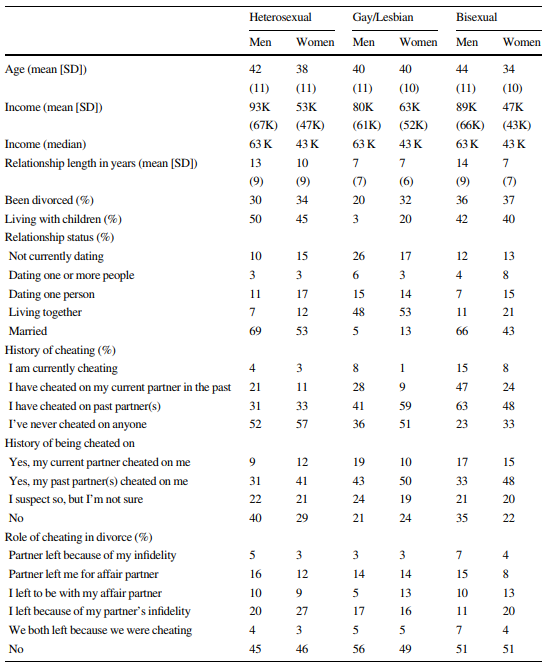
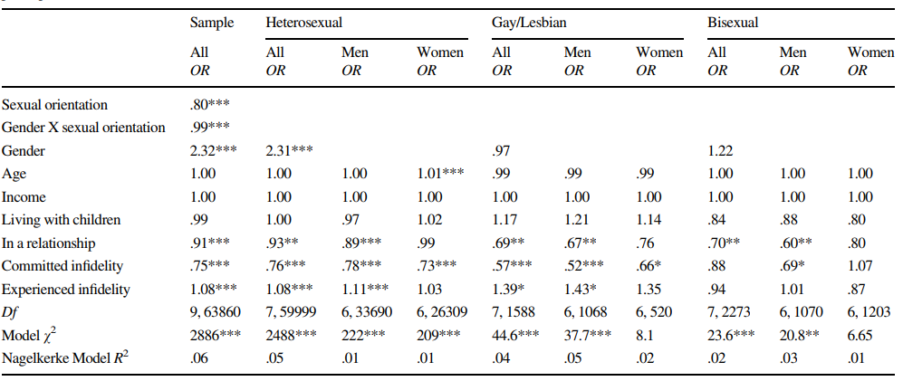

Upset Over Sexual versus Emotional Infidelity Among Gay, Lesbian, Bisexual, and Heterosexual Adults
David A. Frederick • Melissa R. FalesAbstract One hypothesis derived from evolutionary perspectives is that men are more upset than women by sexual infidelity and women are more upset than men by emotional infidelity. The proposed explanation is that men, in contrast to women, face the risk of unwittingly investing in genetically unrelated offspring. Most studies, however, have relied on small college or community samples of heterosexual participants. We examined upset over sexual versus emotional jealousy among 63, 894 gay, lesbian, bisexual, and heterosexual participants. Participants imagined which would upset them more: their partners having sex with someone else (but not falling in love with them) or their partners falling in love with someone else (but not having sex with them). Consistent with this evolutionary perspective, heterosexual men were more likely than heterosexual women to be upset by sexual infidelity (54 vs. 35%) and lesslikely than heterosexual women to be upset by emotional infidelity (46 vs. 65%). This gender difference emerged across age groups, income levels, history of being cheated on, history of being unfaithful, relationshiptype, and length. The gender difference, however, was limited to heterosexual participants. Bisexual men and women did not differ significantly fromeach otherin upset over sexual infidelity (30 vs. 27%), regardless of whether they were currently dating aman (35 vs. 29%) or woman (28 vs. 20%). Gay men and lesbian women also did not differ (32 vs. 34%). The findings present strong evidence that a gender difference exists in a broad sample of U.S. adults, but only among heterosexuals.
Keywords Jealousy • Infidelity • Gender differences • Evolutionary psychology • Sexual orientation
Introduction
Infidelity can lead to broken hearts and relationships coming to abrupt and painful ends. A review of ethnographic accounts from 160 societies found that infidelity was the most common cause of marital dissolution (Betzig, 1989). A meta-analysis of 50 studies found that 34% of men and 24% of women have engaged in extramarital sexual activities (Tafoya & Spitzberg, 2007). Infidelity in dating relationshipsis even higher (McAnulty & Brineman, 2007).
The responses of men and women to the threat of infidelity range from intense pangs of jealousy to elaborate displays of affection to woo their partner back. Of particular theoretical interest has been the upset that men versus women feel in response to sexual and emotional infidelity by their partners.
We first review logic behind the proposal that men and women differ in their responses to these different forms of infidelity, as well as findings from the existing literature. We then turn to a study investigating the extent to which this gender difference emerges in a large and diverse sample of older adults. This study provides the first large-scale examination of gender and sexual orientation differences in responseto potential sexual versus emotional infidelity in U.S. adults.We also examined the extent to which these differences relate to personal factors (age, income, presence or absence of children), relationship variables (relationship statusand relationship length),and sexual infidelity history. The current study (N=63,894) more than doubles the size of the existing samples in the literature, which has been reviewed in three meta-analyses (Carpenter, 2012; Harris, 2003; Sagarin et al., 2012).
Sexual and Emotional Infidelity and Jealousy
Two types of betrayal evoke particularly negative reactions from both men and women: sexual infidelity and emotional infidelity (Buss & Haselton, 2005; Buss, Larsen, & Westen, 1996; Buss, Larsen, Westen, & Semmelroth, 1992). Sexual infidelity occurs when a person has sexual relations with someone other than his or her relationship partner, despite having an agreement to remain sexually monogamous. The feeling of sexual jealousy may be one mechanism that motivates men and women to respondtothe threat of sexual infidelity
In contrast to sexual infidelity, emotional infidelity occurs when people form a deep emotional attachment and possibly fall in love with someone other than their primary partners. Emotional jealousy is thought to motivate men and women to engage in behaviors to prevent emotional infidelity or take corrective action after the infidelity has occurred.
An Evolutionary Perspective on Gender Differences in Responses to Sexual and Emotional Infidelity
Sexual and emotional infidelity can both cause harm to men and women. For both genders, sexual and emotional infidelity can leadto conflicts with partners, relationship dissolution, hurt feelings, abandonment, partner violence, andloss of resources when these resources are invested into affair partners. Bussetal. (1992, 1996) and Buss and Haselton (2005) noted, however, that the costs of these different types of infidelity may differ by gender, potentially leading to gender differences in the degree of upset over sexual versus emotional infidelity. Here, we briefly describe the logic behind their proposal rooted in evolutionary theories.
Sexual Infidelity
Men face a problem that women never face. Men always face the problem of paternal uncertainty whereas women never face the problem of maternal uncertainty. Unless a man is present with his partner 100 % of the time, it is possible that his partner has had sexual intercourse with someone else. In response to this challenge of paternal uncertainty, males in a variety of species have developed a host of physical and behavioral mechanisms to enhancethe probability that they are fathers of offspring (e.g., pre- and post-copulatory mate guarding; seminal copulatory plugs) (Andersson, 1994). It is proposed that males who evolved mechanisms that favored devoting relatively greater time and energy to raising genetically related offspring would have had a reproductive advantage over males without these mechanisms.
Sexual jealousy may be one emotion that facilitated behaviors to increase paternal certainty. Human men, on average,invest far more in offspring than do males of most other mammals (Hrdy, 2008). This substantially higher investment is thought to occur, in part, because human babies are quite fragile and slower to develop to maturity than the offspring of most other mammals, including other primates (Mace, 2000). The fact that human males invest heavily in offspring and the fact that they never possess paternal certainty may have placed added selection pressure over evolutionary time that favored the development of particularly intense feelings of sexual jealousy in response to sexual infidelity or the possibility of sexual infidelity. Thus, while it is expected that men and women experience sexual jealousy, men may exhibit particularly heightened responses to sexual infidelity compared to women.
Emotional Infidelity
Buss et al. (1992, 1996) and Buss and Haselton (2005) also proposed that women, on average, would respond more strongly to emotional infidelity than would men. This logic is based on the observationthat women have greater obligatory costs associated with reproduction.
A woman's investment includes 40 weeks of pregnancy in which caloric needs are elevated by 8-10% (Dufour & Sauther, 2002). Thisis followed by a period of lactation, lasting about 2.5 years in hunter-gatherers (Lancaster, Kaplan, Hill, & Hurtado, 2000), in which caloric needs are elevated by 26 % (Dufour & Sauther, 2002). The presence of a provisioning relationship partner enabled women to more easily meet their overall caloric needs, which are heightened while pregnant and nursing (Marlowe, 2003). In a review of selected hunter-gatherer societies, women burned more calories than they produced via foraging during their reproductive years (Kaplan, Hill, Hurtado, & Lancaster, 2001), and having an investing partner provided women with the option to reduce foraging time and increase childcare time in these populations (Hurtado, Hill, Kaplan, & Hurtado, 1992). Offspring mortality appears to be heightened in harsh ecologies when fathers are absent, leading father presence to be particularly important in some contexts (Hrdy, 2008; Sear & Mace, 2008). Father support may be particularly important for child outcomes and well-being in late childhood and adolescence (Shenk & Szelca, 2012).
Women may not face maternity uncertainty, but they risk the potential loss of resources and commitment from partners if they channel their investment to another mate (Buss et al., 1992, 1996; Buss & Haselton, 2005). If a woman's partner becomes emotionally involved with another person, this may cause him to divert resources and attention away from his primary partner. He may also abandon his primary partner for the affair partner. Depending on the ecological and cultural context,this abandonment could dramatically reduce the resources and food available to women and could increase her and her offspring's mortality risk. Thus, while it is expected that both men and women experience emotional jealousy and that it is a potent experience for both, women may have particularly heightened responses to emotional infidelity compared to men.
What Does It Mean to Say There Is a Gender Difference?
Approaches to Assessing Gender Differences
In studies that used forced-choice measures, men and women were usually presented with a scenario asking them to imagine their partner having sex with someone else and then a scenario asking them to imagine their partner falling in love with someone else. The purpose of imagining the scenarios was to simulate the experience of infidelity to activate evolved mechanisms that might facilitate responses to the infidelity, such as feeling upset or jealous. After imagining events, participants were asked which scenario they found more upsetting, hurtful or jealousy-provoking.
In studies using rating scales, participants rated how upsetting, hurtful or jealousy-provoking they would find sexual infidelity and then also emotional infidelity. Not surprisingly, people generally scored very highly onthese measures, as both forms of infidelity potentially have substantial costs for men and women. Rating scales havethe advantage of separately assessing how upsetting people find each type of infidelity whereas forced-choice measures have the advantage of detecting which of the two forms of infidelity was truly more upsetting when the two were pitted against each other.
In addition to different methods of assessing gender differences in jealousy, there are also different possible hypotheses thatcould bemade regardingthe nature ofthis gender difference. Next, we briefly examine the differing proposals regarding whether the reactions to sexual versus emotional infidelity primarily differ between genders (men are more likely than women to be upset by sexual infidelity, women are more likely than men to be upset by emotional infidelity) or within genders (men are more upset by sexual infidelity than emotional infidelity and women are more upset by emotional infidelity than sexual infidelity).
An Evolutionary Perspective: A Between Gender Difference
The most straight forward prediction arising from the gender difference in parental uncertainty is that men are more likely to be upset by sexual infidelity than women. It is not necessarily the case, however, that the majority of men find sexual infidelity more upsetting than emotional infidelity. The hypothesis simply predicts that more menthan women will be most upset by sexual infidelity. For example, if 30% of men are more upset by sexual infidelity than emotional infidelity, compared to 10% of women saying they are more upset by their partner committing sexual infidelity than emotional infidelity, then this would support the hypothesized gender difference (Buss & Haselton, 2005). This is because many factors shape a person's jealous reactions (e.g., Hanson Sobraske, Gaulin, & Boster, 2014) and gender differences in paternal uncertainty risk is only one of these factors. This between gender difference is the primary hypothesis tested in this study
Alternative View: Within Gender Difference
A second possibility exists. Men may be more upset by sexual rather than emotional infidelity (e.g., 90% of men are most upset by sexual infidelity versus 10% of men are most upset by emotional infidelity) and women are most upset by emotional infidelity. This prediction differs substantially from the one typically advanced by evolutionary psychologists because both emotional and sexual infidelity can clearly have negative effects on both men and women, and gender is only one of many factors that would impact jealous reactions (Buss & Haselton, 2005).
Study Goal 1: Gender Differences in Upset Among Heterosexual Men and Women
After two decades of research, there is much debate regarding whether the gender difference exists and what explains the gender difference (Buller, 2005; Buss & Haselton, 2005) and which methods are best for assessingit (Barrett, Frederick, Haselton, & Kurzban, 2006; DeSteno, 2010; DeSteno, Bartlett, Braverman, & Salovey, 2002; DeSteno, Bartlett, & Salovey, 2006; Edlund, 2011). The first goal of the present study was to identify whether the gender difference exists using a large and diverse sample of older adults using forced-choice measures that avoid what has been termed the "double-shot" problem. Here, we review the past research examining the gender differences and the doubleshot hypothesis.
Past Research on Gender Differences in Jealousy and Conflicting Results Across Meta-Analyses
Three meta-analyses have been conducted on gender differences in jealousy. In the first meta-analysis, Harris (2003) concluded that the gender difference typically emerged when using forced choice measures but not when using rating scales. These gender differences were most apparent among college students.
For example, in one study of college students, Buss et al. (1999) found gender differences in upset over sexual versus emotional infidelity across multiple sites. Sexual infidelity was more distressing to men versus women in the U.S. (76 vs. 32%), Korea (59 vs. 18%), and Japan (38 vs. 13%). In the only study of non-industrialized populations, Scelza (2014) found that men were more likely to report being upset by sexuality infidelity than women among the Himba of Northwest Namibia (96 vs. 66%). In one study of 3,879 college students, attachment style moderated the gender difference, but the gender difference emerged regardless of attachment style (Treger & Sprecher, 2010). Thus, there were clearly cultural, ecological, and/or contextual factors that produced variation regarding the degree to which men and women were bothered most by sexual infidelity versus emotional infidelity, but the gender difference was robust across the contexts.
Surprisingly, however, two recent meta-analyses came to completely opposing conclusions regarding gender differences in jealousy. Sagarin, Becker, Guadagno, Nicastle, and Millevoi (2012) found that the gender difference in jealousy emerged in studies using continuous measures. The gender difference was larger among student samples than among nonstudent samples, but still emerged in both types of samples. In contrast, Carpenter (2012) concluded that the observed patterns failed to support the evolved gender differences proposal
These conflicting conclusions were due, in part, to different framings of the gender difference hypothesis. Carpenter (2012) examined the within gender difference, reporting that both men and women typically find emotional infidelity more upsetting than sexualinfidelity.Consistentwiththe between gender difference proposed by evolutionary psychologists, however,the odds ratios presented by Carpenter (2012, Table 2) clearly showed that men were more likely than women to select sexual infidelity as more upsetting among U.S. students (1.51 vs. .37), U.S. nonstudents (.82 vs. .34), international students (.74 vs. .25), and international nonstudents (.56 vs. .29). These results were consistent with the between gender difference derived from the evolutionary perspective advanced by Buss et al. (1992, 1996) and Buss and Haselton (2005).
Although the vast majority of studies have been conducted with college student samples, there have been several small studies of community samples. Some studies have demonstrated the gender difference in adults, but often of smaller magnitude relative to undergraduates (Shackelford et al., 2004) and sometimes only for specific subsamples (Tagler, 2010). A nationally representative study of 4,507 participants found that men were more likely than women to be more upset by sexual infidelity than emotional infidelity when answering a forced-choice measure, but not when answering a continuous measure (Zengel, Edlund, & Sagarin, 2012). In a nationally representative sample of 777 men and women, Green and Sabini (2006) found that men versus women were more upset, hurt, and angry by sexual infidelity using forced-choice, but not continuous, measures. Thus, the extent to which gender differences in jealousy exists in a broad samples of adults remains in question.
Social-Cognitive Perspective
The evolutionary perspective of Buss et al. (1992, 1996) and Buss and Haselton (2005) is frequently contrasted with the social cognitive perspective (Carpenter, 2012; Harris, 2003; Harris & Darby, 2010). According to the social-cognitive perspective, both emotional and sexual jealousy are the result of perceptions that a rival poses a threat to what one perceives to be a valuable interpersonal relationship. Jealousy is aroused when a general threattothe relationship orto one's self-esteem is detected. Since both forms of infidelity are threatening to both men and women, gender differences will not be observed.
Moreover, Harris (2003) suggested that gender differences are observed among younger men and women because young menmay be particularly more willing to endorse items related to sexual infidelity because sex is relatively more important to them and because young men may have a stronger sex drive. This perspective suggests that there will be no gender differences in infidelity concerns, except perhaps among young people. The current study directly tested for gender differences across age groups.
The Double-Shot Hypothesis
One concern is that men may be more upset by sexual infidelity than emotional infidelity if they believed that emotions were tied to sex more intimately for women than for men (Desteno & Salovey, 1996). Men may believe that if a woman was having sex with someone, she was also likely to be emotionally involved with this person. If men believe this was true, sexual infidelity may seem like a double-shot of betrayal.
Although this could explain some of the variance in men's and women's responses, research testing this proposal found that the gender difference remains strongwhen participants were explicitly told that the sexual affairs did not entail emotional entanglements and that the emotional affairs did not include sexual infidelity (Buss et al., 1999). To minimize responses being influenced by double-shot assumptions, the current study adopted this approach as well.
Study Goal 2: Expected Gender by Sexual Orientation Differences in Upset When Testing the Double-Shot Hypothesis
The attitudes and experiences of gay, bisexual, and lesbian men and women have been historically understudied and under theorized in psychology generally, particularly in regards to tests of evolutionary perspectives. Although it is difficult to make firm predictions,thereisa question ofwhether or not gayand bisexual men will show a reduced response to sexual infidelity relative to heterosexual men. Past research on gender differences according to sexual orientation has been inconclusive with different studies identifying different patterns (e.g., Dijkstra et al., 2001; Harris, 2002). These studies, however, were limited by relatively small samples sizes of non-heterosexual participants (Ns ranged from 88 to 237).
Dijkstra et al. (2001) and Carpenter (2012) elaborated on how the response patterns of nonheterosexual participants could provideevidence for or against the double-shot hypothesis. If people assumed that women committing sexual infidelity also felt an emotional connection to their partners, then people who primarily date women should be more likely to express more upset over sexual infidelity than emotional infidelity (heterosexual men, lesbian women, and bisexual men and women with female partners). If people assumed that men who committed emotional infidelity also committed sexual infidelity, then compared to people who date women, people who primarily date men should express relatively less upset over sexualinfidelity relativeto emotional infidelity. Thus, according to the double shot hypothesis applied to sexual orientation, heterosexual women, gay men, and bisexualmen and women with malepartners should be less likely than heterosexual men, lesbian women, and bisexual men and womenwith female partners to be more upset by sexual infidelity. Although we attempted to minimize the double-shot problem explicitly through the wording of the question in the current study, we examined whether the results matched or contradicted the pattern predicted by this hypothesis.
Study Goal 3: Gender Differences Across Personal Characteristics
Most research has focused on whether or not a gender difference in jealousy exists in student versus nonstudent samples. A key aspect of evolutionary social science theorizing is that humans are an intensely social species with evolved mechanisms that produce preferences and behaviors that are malleable and contingent upon cultural factors, the local ecology, and one's own personal characteristics (e.g., Boyd & Richerson, 2005; Gallup & Frederick, 2010; Gangestad & Simpson, 2000).
Paternal uncertainty and costs of abandonment linked with gender were only two of many factors that could shape whether or not a given person was more upset by sexual or emotional infidelity. Consistent with an evolutionary perspective, one's reaction to sexual versus emotional infidelity is likely shaped by environmental and personal factors. Research on the impact of these demographic characteristics is sparse and conflicting (Zengel et al., 2012). In this study, we examined a wide variety of demographic characteristics and relationship factors (e.g. history of infidelity) to determine the extent to which these factors predicted responses to infidelity, or whether the gender different was robust across these factors in adults.
As people age and gain more relationship experience, they may bein a better placeto gauge their potential reactions. If gender differences only emerge among young people or people in new relationships,this wouldbe consistent withthe Harris (2003) proposal that perhaps sex is simply particularly relevant to the identities and experiences of young men.
People who have committed infidelity or who have had partners who cheated on them may be in the best position to predict their jealousy reaction to sexual versus emotional infidelity, but existing evidence provides inconclusive results (Sagarin et al., 2003; Tagler, 2010; Zengel et al., 2012). We examined whether the proposed gender differences were observed regardless of history of committing infidelity, being faithful, or having a marriage end due to sexual infidelity.
Method
Participants
The present study was based on secondary analyses of anonymous data collected via a survey posted on the news website msnbc.com (now NBCNews.com) for 10 days in 2007. Participants were invited to complete a survey on their attitudes towards their relationships, dating experiences, and love life via a link on the webpage that made no explicit mention of jealousy or infidelity. To prevent the same individual from responding to the survey more than once, a software program denied multiple responses from any given computer
NBCNews.com is the official website of NBC News. Its 58 million uniquemonthly visitors include a broad diversity of people in terms of age, income, and political orientation (NBCNews. com Media Kit, 2012). The website serves primarily U.S. visitors. Nationality was not recorded in this survey, but in other datasets collected via msnbc.com and NBCNews.com, the percentage reporting a U.S. zip code was over 95 % (and some proportion of the remaining 5% were likely living in U.S. but chose not to report zip code; Gillespie, Lever, Frederick, & Royce, 2014). In a second study, participants were asked to indicate whetherthey currentlyliveinthe U.S. (97.7%),Canada (1.2%), or other (2%). Thus it is likely the results of this study reflect attitudes of men and women living in the U.S. Datasets garnered by NBCNews.com have been used successfully for various examinations of elements of body dissatisfaction, human sexuality, sexual regrets, and close relationships (Frederick, Lever, & Peplau, 2007; Frederick, Peplau, & Lever, 2006, 2008; Galperin et al., 2013; Gillespie et al., 2014; Lever, Frederick, Laird, & Sadeghi Azar, 2007; Lever, Frederick, & Peplau, 2006; Peplau et al., 2009).
A total of 63,894 participants ages 18-65 years completed the survey. Participants indicated their sexual orientation through the following item: "Do you consider yourself: straight/heterosexual, gay/lesbian, or bisexual". This sample included 33,699 heterosexual men, 26,332 heterosexual women, 1,068 gay men, 520 lesbian women, 1,071 bisexual men, and 1,204 bisexual women. In addition to comparisons of all groups, for some analyses comparisons were conducted between men and women (coded "0" vs. "1") and between heterosexual and non-heterosexual participants (coded"0"vs."1"), followed bymore detailed analyses for each of the specific groups (e.g., bisexual men, lesbian women). On average, participants were in their late-30 s (see Table 1 for key demographics).

Measures
Participants were presented withthe following scenario: "Take a moment to imagine which of the following situations would be MOST upsetting or distressing to you." They then chose between the following options: "You found out that your partner is having a sexual relationship with someone else (but has not fallen in love with this person)" or "You found out that your partner has fallen in love with someone else (but is not having a sexual relationship with this person)." The parentheticals were included to reducethe potential "double-shot" problem where people with female partners might assume that a woman having sex with a partner has also fallen in love with that partner (see Buss et al., 1999). The order of the presentation (sexual then emotional infidelity or emotional then sexual infidelity) was counterbalanced across participants.
For all results displayed in percentages, we report the percentage of people who wer emore upset by sexual than emotional infidelity. For odds ratios, emotional infidelity was coded as 0 and sexual infidelity was coded as 1, so higher odds ratios indicate that a person was more likely to select sexual infidelity as more upsetting.
Demographic Factors
Income Participants wer easked "What is your personal annual income, including your wages or salary, bonuses, and other sources of income? (Do not include your partner's income.)". Participants then indicated their income on a pull-down chart which was divided into 10 categories ranging from $0-$4,999 to $300,000 or more. To calculate a rough approximation of the average and median salary, midpoints of the categories were used (e.g., $0-$4,999 was recoded as $2,500) with the exception of $300,000 or more, which was recoded as $300,000.
Children Participants were asked "Do you have children or stepchildren living with you?" and could respond "No" (coded as "0") or "Yes" (coded as "1").
Relationship status Relationship status was assessed by asking, "Which of the following best describes your current relationship status? (Check one). "The following were the response choices: "not currently dating," "dating more than one person," "dating one person," "living with my partner," "married," or "remarried." For some analyses, participants were coded as Not in a Relationship ("0"; not currently dating; dating more than one person) or In a Relationship ("1"; the remaining categories). The items were biased towards traditional relationship categories (e.g., there was no option for people to indicate polyamory or committed relationship to multiple people). Given that the "dating" items had somewhat ambiguous meanings, we elected to code the "dating more than one person" response as "not in a relationship", although this category likely has people with a diverse set of relationship statuses. This decision was also made because these participants were not asked the question below on relationship length.
Partners of bisexuals Participants were asked, "What gender is/was your primary partner?" Of the bisexual men in the sample, 8% reported a male partner, 83% reported a female partner, and 9% reported no partner. Of the bisexual women in the sample, 82% reported a male partner, 8% reported a female partner, and 10% reported no partner.
Divorce status Participants could respond "No" or "Yes" to the question "Have you ever been divorced?" (No="0"; Yes="1").
Infidelity History
History of experiencing infidelity To investigate participants' history of being cheated on, they responded to the question,"If one defines 'cheating' as having intercourse, oral sex or genital stimulation outside of a committed relationship, have you ever been cheated on? (Check all that apply)." Possible responses were: "Yes, my current partner cheated on me," "Yes, my past partner(s) cheated on me," "I suspect so, but I'm not sure," or "No." For some analyses, participants were classified as Not Experiencing Infidelity ("0") if they said "No" and Experienced (or possibly experienced) Infidelity if they said yes to any of the other items ("1").
History of committing infidelity Participants' history of cheatingwas assessed by asking, "Have you ever had intercourse, oral sex or genital stimulation with someone other than your primary partner? (Check all that apply)". Response options were "I am currently cheating," "I have cheated on my current partner in the past," "I have cheated on past partner(s)," and "I've never cheated on anyone." For some analyses, participants were classified as having Not Committed Infidelity ("0") if they had never cheated on anyone or as having Committed Infidelity if they fell in any remaining category ("1").
Role of infidelity in divorce Divorced participants were asked, "Did sexual infidelity play a role in the divorce? (Check one)." The response options were: "Yes, my partner left because of my infidelity," "Yes,my partner left because he/she wanted to be with an affair partner," "Yes, I left because I wanted to be with my affair partner," "Yes, I left because of my partner's infidelity," "Yes, we both left because we were cheating on each other," and "No."
Statistical Analyses
Logistic Regressions
We relied on two main pieces of evidence to examine the factors associated with upset over sexual versus emotional infidelity. First, we report the results of logistic regressions examining the extent to which gender, sexual orientation, personal factors, and infidelity history predicted greater upset over sexual infidelity (see Table 2). The relative importance of each predictor variable is also shown for each gender by sexual orientation group. Higher odds ratios above 1.0 indicate that people who scored higher on the predict or variable were more likely to be upset most by sexual infidelity.

Percentages
We focused primarily on whether gender differences were exhibited by different subgroups of participants. The overall percentage of heterosexual, gay, lesbian, and bisexual men and women who were most upset by sexual infidelity is shown in Fig. 1. The results for bisexual individuals with male versus female partners are shownin Fig. 2. For heterosexual participants, the gender differences are also highlighted in more detail for personal income (Fig. 3), relationship length (Fig. 4), and experiences with infidelity related to their divorce (Fig. 5).


Category 1 X2 (1, 671)=21.0;
Category 2 X2 (1, 2721)=90.0;
Category 3 X2 (1, 1776)=74.5;
Category 4 X2 (1, 4366)=207,
Category 5 X2 (1, 695)=17.8,
Category 6 X2 (1, 8655)=181; all
ps<.001
Tables 3, 4, 5 and 6 show the percentage of heterosexual, gay, lesbian, and bisexual women who were more upset by sexual infidelity than emotional infidelity across different demographic factors (Table 3), relationship factors (Table 4), and infidelity histories (Tables 5, 6).
Results
We suggest that particular attention be paid to the effect sizes and absolute percentage differences between men and women because the large sample sizes led to even miniscule effects and differences of two to three percentage points emerge as statistically significant.


Study Goal 1: Gender Differences in Upset in Among Heterosexual Men and Women
The logistic regression revealed that gender was a strong predictor of upset over sexual versus emotional infidelity for heterosexual participants such that the odds of being more upset over sexual infidelity were 2.31 times greater in men than women (see Table 2). As shown in Fig. 1, more heterosexual men than women were more upset by sexual infidelity (54 vs. 35%). This gender difference was observed across all levels of all moderators (Tables 3, 4, 5, and 6 and Figs. 3, 4, 5).
Study Goal 2: Expected Gender by Sexual Orientation Differences in Upset When Testing the Double-Shot Hypothesis
In contrast to the double-shot hypothesis, people who typically date women were not systematically more likely to be upset by sexual infidelity than people who typically date men. Instead, it was heterosexual men who stood out from all other groups in terms of being most upset with sexual infidelity (54%), more so than heterosexual women (35%), gaymen (32%),lesbian women (34%), bisexual men (30%), and bisexual women (27%).
Among bisexual participants, people currently dating men were no more likely than people dating women to be more upset by sexual infidelity (28 vs. 28%). The only pattern consistent withthe double-shot was that bisexual men currently dating men (n=89) were more likely than bisexual women currently dating women (n=95) to be more upset by sexual infidelity (Fisher's Exact Test, p=.03; Fig. 2). In contrast to the double-shot hypothesis, there was no significant difference between bisexual women currently dating men (n=992) and bisexual men currently dating women (n=896; Fisher's Exact Test, p=.68).
Study Goal 3: Gender Differences Across Personal Characteristics
Demographic Factors
As shown in Tables 2 and 3, age, income, and whether or not people had children was unrelated to upset over sexual versus emotional infidelity. In contrast to the Harris (2003) social cognitive perspective, younger participants were not notably more upset by sexual infidelity than older participants. The gender difference was varied somewhat across age groups, from a low of 13-15% difference among the oldest groups (46-65)to a high of 19-23% difference among the three youngest groups (18-45). With respect to income, as shown in Fig. 3, the gender difference was relatively consistent acrossincomelevels, from a low of 16% difference to a high of 21% difference.
There was a tendency for people in relationships to be less upset by sexual infidelity relative to emotional infidelity and this pattern was strongest among gay men and bisexual men (see Tables 2 and 4). It was non-significant among any of the groups of women. Looking across relationship lengths, the gender difference was largest among participants who had been in their relationship in the categories ranging from less than one year up to 20 years (19-25%) and smallest among people together 21-30 years (16%) and 31+ years (15%).
Relationship length mattered little, however, in terms of upset over sexual infidelity. Among heterosexual women, couples together for less time were similar to couples who were together for longer in terms of greatest upset by sexual infidelity (36-37% vs. 33-40%), and this was generally true for heterosexual men (58-61% vs. 53-55%; see Fig. 4).
History of Experiencing Infidelity
As shown in Table 2, people who had been a victim of infidelity were more likely to be upset by sexual infidelity, but this was only significant for heterosexual (OR=1.11) and gay men (OR= 1.43). Among heterosexual participants, regardless of whether they had been cheated on or not, the size of the gender difference varied little (16-21%) and variations were also small among nonheterosexual participants (Table 5).
History of Committing Infidelity
As shown in Table 2, people who committed infidelity were less likely to be upset by sexual infidelity and this was true for all groups other than bisexual women. Across differing histories of sexual infidelity, the size of the gender difference varied (16-21%). The size of the gender difference varied substantially among bisexuals, with a gender difference of 20% among people who have not committed infidelity in the past and 0% among people who were currently committing infidelity (Table 6).
Role of Infidelity in Divorce
Gender differences emerged between heterosexual men and women across all items (Fig. 5). Men who left their partner because their partner had been unfaithful were most likely to report upset over sexual infidelity.
Discussion
Study Goal 1: Gender Differences in Upset Among Heterosexual Men and Women
Consistent with the Buss et al. (1992,1996) and Buss & Haselton 2005 proposal of evolved gender differences, men were more likely than women to be upset by sexual infidelity relative to emotional infidelity (54% versus 35%). In a logistic regression, the odds of reporting relatively greater upset over sexual infidelity was 2.31 times greater in heterosexual men than women. The results reinforce the meta-analytic findings of Harris (2003) and Carpenter (2012, Table 2) that between gender differences emerge when using a forced-choice measure.
Study Goal 2: Expected Gender by Sexual Orientation Differences in Upset When Testing the Double-Shot Hypothesis
Although most research has focused on differences between men and women, the results of this study suggest that there was also a difference between heterosexual men and other groups. Heterosexual men were most likely to be relatively more upset by sexual infidelity (54%), with heterosexual women, lesbian women, gay men, bisexual women, and bisexual men being similar to each other in levels of upset over sexual infidelity (27-35%).
In contrast to the double-shot hypothesis (Carpenter, 2012), people who typically date men were not more likely to be relatively more upset by emotional infidelity, while people who typically date women were not more likely to be relatively more upset by sexual infidelity. The only pattern somewhat consistent with the double-shot was that bisexual men dating men were slightly more likely than bisexual women dating women to be more upset by sexual infidelity. In contrast to the double-shot hypothesis, bisexual women dating men and bisexual men dating women did not differ. These findings suggest that either (1) the doubleshot hypothesis is not aviable explanation for the observed gender differences or that (2) the parentheticals that clearly disentangled sexual and emotional infidelity from each other are effective in preventing the double-shot problem.
It is unclear why gay, bisexual, and heterosexual men differed from each other. There may be more of a social norm among gay and bisexual men that is accepting of sexual non-exclusivity than among heterosexual men (La Sala, 2004), which may lead people to suppress, ignore, downplay, or not experience feelings of sexual jealousy and to instead focus one motional infidelity. Another explanation forthe difference is that gay and bisexual men dating men do not face the same reproductive costs that heterosexual men do. Gay men never face the problem of paternal uncertainty and perhaps evolved systems designed to avoid cuckoldry are never activated or developed. One difficulty with this interpretation, however, is that bisexual men were generally similar in their responses to gay men, even among bisexual men who were currently in relationships with women. The explanation for this pattern of results remains a bit of a mystery, regardless of which theoretical perspective is applied. The results do suggest, however,the value of examining how sexual orientation might relate to expression of jealousy (e.g., Bevan & Lannutti, 2002).
Study Goal 3: Gender Differences Across Personal Characteristics
The gender difference was robust across all levels of all moderators (age, income, relationship status, relationship length, history of experiencing and committing infidelity). In contrast to the Harris (2003) social-cognitive perspective, the gender difference was observed among both younger and older adults.The proposal that income and childhood status would be notable predictors of jealousy was not supported. Being in a relationship was associated with relatively less upset over sexual infidelity for gay and bisexual men and there was a statistically significant but weak association for heterosexual men and women. The gender difference narrowed slightly among people in longer relationships but did not disappear
People who have experienced or committed in fidelity may be in the best position to estimate which aspect of the infidelity would be most upsetting. Gay men and heterosexual men who had experienced infidelity were relatively more upset by sexual infidelity, although the effect size was small for heterosexual men (OR=.78). With the exception of bisexual women, people who had committed infidelity were relatively less upset by sexual infidelity. Understanding what it feels like to commit in fidelity may have shifted people's perceptions regarding which aspect of the infidelity-sexual or emotional-is more upsetting.
Implications for Theoretical Perspectives
The evolutionary approach of Buss et al. (1992, 1996) and Buss and Haselton (2005) provided a clear prediction based on gender differences in reproduction: Men always face the problem of paternal uncertainty, whereas women never face this problem. This uncertainty may lead heterosexual men to become more sensitive to sexual infidelity than women, particularly when it is pitted against emotional infidelity.
Social-Cognitive Perspectives
Many factors beyond paternal uncertainty, however, determine an individual's response to infidelity and the magnitude of the gender difference. Social-cognitive perspectives hold promise for identifying potential moderators of the gender difference. The social-cognitive theory of jealousy stresses the role of interpretation and appraisal of the threats to interpersonal relationships. This perspective proposes that the extent to which one experiences jealousy over sexual infidelity will depend on the person's appraisals of why his/her partner is doing so and how it reflects on the self (Harris, 2003; Harris & Darby, 2010). Harris (2003) proposed this perspective suggests no gender difference will emerge.
Using the logic of this perspective, we could easily generate an a priori prediction that men would be more upsetthan women by sexual infidelity. Men are socialized to be masculine, which includes having great sexual prowess. If a man's partner commits sexual infidelity, this brings into question his sexualprowess and therefore threatens his masculinity, which leads him to react most negatively to his partner committing sexual rather than emotional infidelity. In contrast, women are taught to think relationallyandtobetheemotional nurturersina relationship. Iftheir partner commits emotional infidelity, this may threaten her sense of self more so than if her partner commits sexual infidelity.
On the other hand, using the logic of this perspective, we could use this perspective to make the exact opposite a priori prediction: women would be more upset by sexual infidelity than men. Women are taught from a young age that they are expected to be desirable and sexually attractive to men. This leads them to define their self-worth, in part, based ontheir sexual attractiveness.This self objectification and sexualization leads women to be particularly concerned and dissatisfied with their bodies (Frederick, Forbes, Grigorian, & Jarcho, 2007; Gray & Frederick, 2012; Swami et al., 2010), especially during sex (Peplau et al., 2009). Thus, when a woman's partner has sex with someone else, this threat to her self-concept as a desirable woman might sting worse than any type of emotional infidelity.
Thus, the advantage of relying on the social-cognitive perspective is that it can generate interesting proposals regarding individual difference variablesthatmight predictwhy some people are more upset by sexual infidelity than others. We propose, however, thatit lacks the ability to make the clear apriori predictions regarding gender differences in jealousy that are made possible by the evolutionary logic underlying paternal uncertainty concerns. Further, relying on an evolutionary perspective can also generate interesting predictions regarding variation within genders.
Evolutionary Perspectives
One notabl elimitation of the proposed evolutionary perspective, however, is that it is unknown whether sexual infidelity and emotional infidelity were sufficiently distinguishable in ancestral times to the point where they might generate different emotional reactions, which then might elicit behaviors that effectively deter infidelity, resource diversion, or abandonment.
However, paternal uncertainty and access to resources are two long-standing problems facing pair-bonding and polygynous mammals (Andersson, 1994). These problems may have led to the evolution of these jealous reactions, which are activated in response to immediate threats of infidelity presented in the modern world. Rates of non-paternity in Western cultures are estimated to be 2-3% for a given child-father combination (Anderson, 2006). Ethnographic reports have documented infidelity in a variety of small scale societies, including the !Kung, Ache, Bari, Tsimane, and Tiwi (see Frederick, Reynolds, & Fisher, 2013; Scelza, 2011; Voracek, Fisher, & Shackelford, 2009). To our knowledge, only two studies on genetic paternity have been conducted in small-scale natural fertility populations. A nonpaternity rate of 9.6% has been reported among Yanomamo (Neel & Weiss, 1975) and the rate is even higher among the Himba of Namibia (17%) (Scelza, 2011). These findings provide some evidence for the proposal that infidelity and nonpaternity is a widespread phenomenon. Sexual and emotional jealousy may be responsesthat emergedto reducethelikelihood of experiencing these infidelities.
Limitations and Strengths
The forced-choice paradigm has several limitations. First, it relies on people's reports of their anticipated or imagined jealousy, which potentially differ from how they would truly feel in response to actual infidelity. The item also assumes that all participants would be upset by their partner having sex or falling in love with someone else. Future research should include modified items and examine the responses of polyamorous individuals. Additionally, although our sample was unusually large and geographically diverse, it was not nationally representative. Furthermore, participants were visitors to a news website who self-selected into this sample;thus, the generalizability to any population remains unknown (although it is unclear how this limitation would produce the gender and sexual orientation differences observed in this study).
Despite the limitations of a volunteer sample, there were a number of advantages to our study. Internet samples tend to be more diverse with respect to gender, sexual orientation, age, socioeconomic status and geographic region than convenience samples of students (Gosling, Vazire, Srivastava, & John, 2004). Surveys can be completed with ease from the privacy of participants' homes or workplaces, thereby reaching individuals who would not otherwise have the opportunity to participate in research studies.
Several strengths ofthe current research are noteworthy. The samplewas substantiallylargerandmoreheterogeneousthan previous studies of gender differencesin sexualjealousy,which have typically relied on small convenience or college student samples. Thepresentstudydoublesthesamplesizeofadultsinstudiesexamining jealousy responses to sexual versus emotional infidelity. Whenminoritygroupssuchaslesbianwomen,gaymen,andbisexual men and women are of interest, the enormous reach and popularity ofweb surveys can yield a significant advantagein reaching these populations.
Future Directions
Given that the current and past research has generally found that there are gender differences associated with reported or anticipated jealousy in multiple Western and university settings (Carpenter, 2012; Sagarin et al., 2012), we suggest that there are several particularly valuable future lines of research in this area.
The Role of Ecology and Life History
The is a growing movement towards integrating concepts from behavioral ecology (how different ecologies evoke different reproductive and survival strategies from organisms), life history theory (how developmental events, experiences, and energy budgets shape the behaviors of organisms), and evolutionary psychology (how the mind evolved in response to recurrent adaptive challenges) to understand social psychological phemenona (e.g., Frederick & Haselton, 2007; Kaplan & Gangestad, 2005; Smith, Mulder, & Hill, 2001; Snyder et al., 2011; Winterhalder & Smith, 2000). Identifying whether the gender difference in jealousy responses are robust across ecological contexts where men depend heavily on resources provided by women would be greatly informative. It can help clarify whether these gender differences are part of a relatively closed system, emerging reliably across ecological settings due to the fact that paternal uncertainty is always present, or part of an open system, disappearing oreven reversing in ecological settings where men are heavily dependent on their partners for food and resources.
The Role of Social Structure and Social Norms
Social structures and norms may also play important roles in shaping the valuation of chastity and paternity. In some societies, there is a belief in partible paternity, where it is believed that a woman should have intercourse with multiple men in order to become pregnant (Walker, Flinn, & Hill, 2010). Research investigating social structure and social norms that differ dramatically from those in industrialized cultures would be valuable for determining how malleable gender differences in sexual jealousy are.
Conclusions
In contrast to most previous research, which has been conducted with university students, the current sample documents the gender difference in upset over sexual versus emotional infidelity in a sample of adults with diverse sexual orientation, incomes, ages, relationship lengths and statuses, and infidelity histories. The results were consistent with the Buss et al. (1992,1996) and Buss and Haselton (2005) evolved gender differences proposal. We suggest that the findings of this study present intriguing evidence that a genuine gender difference existsin a relatively broad set of U.S. adults, but that this difference is limited to heterosexual men and women.
Acknowledgments We would like to thank MSNBC.com and iVillage. com for access to the dataset for the Love, Lust, and Loyalty Survey. Both authors contributed equally to the preparation of this article. The order of authorship was determined by a flip of the coin.
References
- Anderson, K. G. (2006). How well does paternity confidence match actual paternity? Current Anthropology, 47, 513-520.
- Andersson, M. (1994). Sexual selection. Princeton, NJ: Princeton University Press.
- Barrett, H.C., Frederick, D. A., Haselton, M. G., & Kurzban, R. (2006).Can manipulations of cognitive load be used to test evolutionary hypotheses? Journal of Personality and Social Psychology, 91, 513-518.
- Betzig, L. (1989). Causes of conjugal dissolution: A cross cultural study. Current Anthropology, 30, 654-676.
- Bevan, J.L., & Lannutti, P. J. (2002).Theexperience andexpression of romantic jealousy in same-sex and opposite-sex romantic relationships. Communication Research Reports, 19, 258-268.
- Boyd, R. T., & Richerson, P. (2005). The origin and evolution of cultures. New York: Oxford University Press.
- Buller, D. J. (2005). Evolutionary psychology: The emperor's new paradigm. Trends in Cognitive Science, 9, 277-283.
- Buss, D. M., & Haselton, M. (2005). The evolution of jealousy. Trends in Cognitive Science, 9, 506-507.
- Buss, D.M., Larsen,R. J., &Westen, D. (1996). Sex differences in jealousy: Not gone, not forgotten, and not explained by alternative hypotheses. Psychological Science, 7, 373-375.
- Buss, D. M., Larsen, R. J., Westen, D., & Semmelroth, J. (1992). Sex differences in jealousy: Evolution, physiology, and psychology. Psychological Science, 3, 251-255.
- Buss, D. M., Shackelford, T. K., Kirkpatrick, L. A., Choe, J. C., Lim, H. K., Hasegawa, M., et al. (1999). Jealousy and the nature of beliefs about infidelity: Tests of competing hypotheses about sex differences in the United States, Korea, and Japan. Personal Relationships, 6, 125-150.
- Carpenter, C. J. (2012). Meta-analyses of sex differences in responses to sexual versus emotional infidelity: Men and women are more similar than different. Psychology of Women Quarterly, 36, 25-37.
- DeSteno, D. (2010). Mismeasuring jealousy: A cautionary comment on Levy and Kelley. Psychological Science, 21, 1355-1356.
- DeSteno, D., Bartlett, M. Y., Braverman, J., & Salovey, P. (2002). Sex differences in jealousy: Evolutionary mechanism or artifact of measurement? Journal of Personality and Social Psychology, 83, 1103-1116.
- DeSteno, D., Bartlett, M. Y., Salovey, P., et al. (2006). Constraining accommodative homunculi in evolutionary explorations of jealousy: A reply to Barrett et al. (2006). Journal of Personality and Social Psychology, 91, 519-523.
- DeSteno, D. A., & Salovey, P. (1996). Evolutionary origins of sex differences in jealousy? Questioning the "fitness"of the model. Psychological Science, 7, 367-372.
- Dijkstra, P., Groothof, H.A.K., Poel, G.A., Laverman, T.T.G., Schrier, M., & Buunk,B. P. (2001). Sex differences in the eventsthat elicit jealousy among homosexuals. Personal Relationships, 8, 41-54.
- Dufour, D. L., & Sauther, M. L. (2002). Comparative and evolutionary dimensions ofthe energetics of human pregnancy and lactation. American Journal of Human Biology, 14, 584-602.
- Edlund, J. E. (2011). Jealousy reconsidered: A reply to DeSteno (2010). Evolutionary Psychology, 9, 116-117.
- Frederick, D. A., Forbes, G. B., Grigorian, K. E., & Jarcho, J. M. (2007a). The UCLA Body Project I: Gender and ethnic differences in selfobjectification and body satisfaction among 2, 206 undergraduates. Sex Roles, 57, 317-327.
- Frederick, D. A., & Haselton, M. G. (2007).Whyis muscularity sexy? Tests of the fitness indicator hypothesis. Personality and Social Psychology Bulletin, 33, 1167-1183.
- Frederick, D. A., Lever, J., & Peplau, L. A. (2007b). Interest in cosmetic surgery and bodyimage:Views ofmen andwomen across the lifespan. Plastic and Reconstructive Surgery, 120, 1407-1415.
- Frederick, D. A., Peplau, L. A., & Lever, J. (2006). The swimsuit issue: Correlates of body image in a sample of 52,677 heterosexual adults. Body Image, 4, 413-419.
- Frederick, D. A., Peplau, L. A., & Lever, J. (2008). The Barbie mystique: Satisfaction with breast size and shape across the lifespan. International Journal of Sexual Health, 20, 200-211.
- Frederick, D.A., Reynolds, T.A., & Fisher,M.L. (2013). The importance of female choice: Evolutionary perspectives on constraints, expressions, and variations in female mating strategies. In R. Chang, M. Fisher, & J. Garcia (Eds.), Evolution's empress: Darwinian perspectives on the nature of women (pp. 304-329). Oxford: Oxford University Press.
- Gallup, G.G.,& Frederick,D. A. (2010). The science of sex appeal: An evolutionary perspective. Review of General Psychology, 14, 240-250.
- Galperin, A., Haselton, M. G., Frederick, D. A., Poore, J., von Hippel, W., Buss, D. M., et al. (2013). Sexual regret: Evidence for evolved sex differences. Archives of Sexual Behavior, 42, 1145-1161.
- Gangestad, S.W.,& Simpson, J. A. (2000).The evolution of human mating: Trade-offs and strategic pluralism. Behavioral and Brain Sciences, 23, 573-644.
- Gillespie, B. J., Lever, J., Frederick, D. A., & Royce, T. (2014). Close adult friendships, gender, and the life cycle. Journal of Social and Personal Relationships. doi:10.1177/0265407514546977.
- Gosling, S. D., Vazire, S., Srivastava, S., & John, O. P. (2004). Should we trust web based studies? A comparative analysis of sex preconceptions about internet questionnaires. American Psychologist, 59, 93-104.
- Gray, P. B., & Frederick, D. A. (2012). Body image and body type preferences in St. Kitts, Caribbean: A cross-cultural comparison with U.S. samples regarding attitudes towards muscularity, body fat, and breast size. Evolutionary Psychology, 10, 631-655.
- Green, M. C., & Sabini, J. (2006). Gender, socioeconomic status, age, and jealousy: Emotional responses to infidelity in a national sample. Emotion, 6, 330-334.
- Hanson Sobraske, K. N., Gaulin, S. J. C., & Boster, J. S. (2014). Functional variation in sensitivity to cues that a partner is cheating with a rival. Archives of Sexual Behavior, 43, 1267-1279.
- Harris, C. R. (2002). Sexual and romantic jealousy in heterosexual and homonsexual adults. Psychological Science, 13, 7-12.
- Harris, C.R. (2003). Sex differences in sexual jealousy, including self-report data, psychophysiological data, interpersonal violence, and morbid jealousy. Personality and Social Psychology Review, 7, 102-128.
- Harris, C. R., & Darby, R. S. (2010). Jealousy in adulthood. In S. Hart & M. Legerstee (Eds.), Handbook of jealousy: Theory, research, and multidisciplinary approaches (pp. 547-571). West Sussex, UK: Wiley.
- Hrdy, S. B. (2008). Cooperative breeding and the paradox of facultative fathering. In R. Bridges (Ed.), The neurobiology of the parental brain (pp. 407-416). New York: Academic Press.
- Hurtado, A. M., Hill, K., Kaplan, H., & Hurtado, I. (1992). Tradeoffs between female food acquisition and child care among Hiwi and Ache forages. Human Nature, 3, 185-216.
- Kaplan, H. S., & Gangestad, S. W. (2005). Life history theory and evolutionary psychology. In D. M. Buss (Ed.), The handbook of evolutionary psychology (pp. 68-95). New York: Wiley.
- Kaplan, H. S., Hill, K. R., Hurtado, A. M., & Lancaster, J. B. (2001). The embodied capital theory of human evolution. In P. T. Ellison (Ed.), Reproductive ecology and human evolution (pp. 293-318). Hawthorne, NY: Aldine de Gruyter.
- Lancaster, J. B., Kaplan, H., Hill, K., & Hurtado, A. M. (2000). The evolution of life history, intelligence and diet among chimpanzees and human foragers. In F. Tonneau & N. S. Thompson (Eds.), Perspective in ethology: Evolution, culture and behavior (pp. 47-72). New York: Plenum Press.
- LaSala, M.C. (2004).Monogamy of the heart: Extradyadic sex and gay male couples. Journal of Gay & Lesbian Social Services, 17, 1-24.
- Lever, J., Frederick, D. A., Laird, K., & Sadeghi-Azar, L. (2007). Tall women's satisfaction with their height: General population data challenge assumptions behind medical interventions to stunt girls' growth. Journal of Adolescent Health, 40, 192-194.
- Lever, J., Frederick, D. A., & Peplau, L. A. (2006). Does size matter? Men's and women's views on penis size across the lifespan. Psychology of Men & Masculinity, 7, 129-143.
- Mace, R. (2000). Evolutionary ecology of human life history. Animal Behaviour, 59, 1-10.
- Marlowe, F. (2003). A critical period for provisioning by Hadza men: Implications for pair bonding. Evolution and Human Behavior, 24, 217-229.
- McAnulty, R. D., & Brineman, J. M. (2007). Infidelity in dating relationships. Annual Review of Sex Research, 18, 94-114.
- NBC News. (2012). Media Kit. NBCNews.com. Retrieved from http://www.nbcnews.com/id/31066137/. Accessed 24 March 2013.
- Neel, J. V., & Weiss, K. M. (1975). The genetic structure of a tribal population, the Yanomama Indians. XII. Biodemographic studies. American Journal of Physical Anthropology, 42, 25-51.
- Peplau, L.A., Frederick, D.A., Yee, C., Maisel, N.,Lever, J., & Ghavami, N. (2009). Body image satisfaction in heterosexual, gay, and lesbian adults. Archives of Sexual Behavior, 38, 713-725.
- Sagarin, B. J., Becker, D.V., Guadagno, R.E., Nicastle, L.D., & Millevoi, A. (2003). Sex differences (and similarities) in jealousy: The moderating influence of infidelity experience and sexual orientation of the infidelity. Evolution and Human Behavior, 24, 17-23.
- Sagarin, B. J., Martin, A. L., Coutinho, S. A., Edlund, J. E., Patel, L., Skowronski, J. J., et al. (2012). Sex differences in jealousy: A metaanalytic examination. Evolution and Human Behavior, 33, 595-614.
- Scelza, B. A. (2011). Female choice and extra-pair paternity in a traditional human population. Biology Letters, 7, 889-891.
- Scelza, B. A. (2014). Jealousy in a small-scale, natural fertility populations: The roles of paternity, investment and love in jealous response. Evolution and Human Behavior, 35, 103-108.
- Sear, R., & Mace, R. (2008). Who keeps children alive? A review of the effects of kin on child survival. Evolution and Human Behavior, 29, 1-18.
- Shackelford, T. K., Voracek, M., Schmitt, D. P., Buss, D. M., Weekes Shackelford, V. A., & Michalski, R. L. (2004). Romantic jealousy in early adulthood and in later life. Human Nature, 15, 283-300.
- Shenk, M.K., & Scelza, B.A. (2012). Paternal investment and status-related child outcomes: Timing of a father's death affects offspring success. Journal of Biosocial Science, 44, 549-569.
- Smith, E. A., Mulder, M. B., & Hill, K. (2001). Controversies in the evolutionary social sciences: A guide forthe perplexed. Trends in Ecology & Evolution, 16, 128-135.
- Snyder, J. K., Fessler, D. M. T., Tiokhin, L., Frederick, D. A., Lee, S. W., & Navarette, C. D. (2011). Trade-offs in a dangerous world: Women's fear ofcrime predicts preferences for aggressive and formidable mates. Evolution and Human Behavior, 32, 127-137.
- Swami, V., Frederick, D. A., Aavik, T., Alcalay, L., Allik, J., Anderson, D., et al. (2010). The attractive female body weight and female body dissatisfaction in 26 countries across 10 world regions: Results of the International Body Project I. Personality and Social Psychology Bulletin, 36, 309-325.
- Tafoya, M. A., & Spitzberg, B. H. (2007). The dark side of infidelity: Its nature, prevalence, and communicative functions. In B.H. Spitzberg & W. R. Cupach (Eds.), The dark side of interpersonal communication (2nd ed., pp. 201-242). Mahwah, NJ: Lawrence Erlbaum Associates.
- Tagler,M. J. (2010).Sex differences in jealousy: Comparing the influence of previous infidelity among college students and adults. Social Psychological and Personality Science, 1, 353-360.
- Treger, S., & Sprecher, S. (2010). The influences of sociosexuality and attachment style on reactions to emotional versus sexual infidelity. Journal of Sex Research, 48, 413-422.
- Voracek, M., Fisher, M., & Shackelford, T. K. (2009). Sex differences in subjective estimates of non-paternity rates in Austria. Archives of Sexual Behavior, 38, 652-656.
- Walker, R. S., Flinn, M. V., & Hill, K. (2010). Evolutionary history of partible paternity in lowland South America. Proceedings of the National Academy of Sciences USA, 107, 19195-19200.
- Winterhalder, B., & Smith, E. A. (2000). Analyzing adaptive strategies: Human behavioral ecology at twenty-five. Evolutionary Anthropology Issues News and Reviews, 9, 51-72.
- Zengel, B., Edlund, J. E.,& Sagarin, B. J. (2012). Sex differences in jealousy in response to infidelity: Evaluation of demographic moderators in a national random sample. Personality and Individual Differences, 54, 47-51.